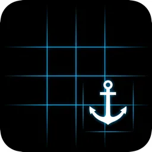
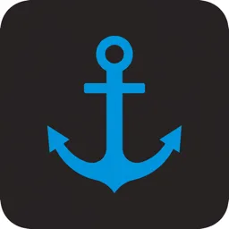
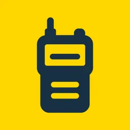
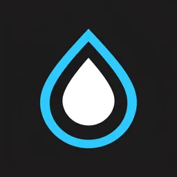
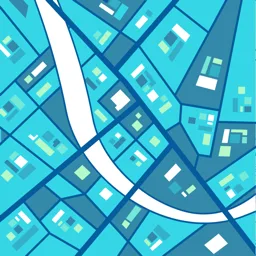
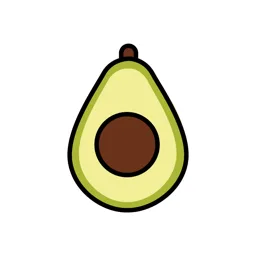
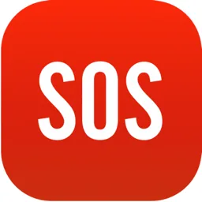

Applicazioni iOS pubblicate e disponibili per iPhone e iPad — sviluppate in Swift e cross-platform.

Mappe nautiche con tile OpenSeaMap, POI di porti e boe, rotte costiere anti-terra, meteo marino e maree. Modalità AR a bordo per riconoscere fari e punti notevoli.

Allarme di ancoraggio per barche: raggio di sicurezza sul punto di calata, rilevamento del drift notturno e notifiche anche a schermo spento.

Push-to-talk senza internet e senza SIM: audio P2P tra iPhone, iPad e Mac. Codice open source su GitHub, 346 stelle.

Trova fontanelle d'acqua potabile e bagni pubblici vicino a te, anche offline. Dati OpenStreetMap e segnalazione collaborativa dei punti mancanti.
Altimetro che incrocia barometro dell'iPhone e quota GPS, con bussola, pendenza, dislivello accumulato e meteo. Sesta major release.

Mappe topografiche e sentieristica basate su OpenStreetMap, con tile offline per zone senza campo. Sullo Store dal 2015 e ancora aggiornata.
App macOS per e-commerce PrestaShop: scansiona il catalogo, trova meta mancanti, duplicati, redirect rotti e immagini senza alt, poi suggerisce le correzioni con AI.

Assistente AI conversazionale per residenti e turisti delle Isole Canarie: meteo iperlocale, consigli su sentieri e spiagge, servizi dell'isola.
Scanner e generatore di QR code e codici a barre: cronologia, batch, export e creazione di QR per wifi, contatti e URL.

Un tap per inviare coordinate precise e link mappa ai contatti di emergenza o al soccorso. Pensata per chi va in montagna o in mare da solo.
Lettore di codici a barre e QR, leggero e immediato. Un classico del catalogo: pubblicato nel 2015 e ancora scaricabile gratuitamente.
Rilevatore di metalli e misuratore di campo elettromagnetico che usa il magnetometro dell'iPhone. Online dal 2014: il progetto più longevo del catalogo.
Sono disponibile per sviluppare app iOS native, Android e web app React/Next.js su misura per la tua azienda.
Contattami su WhatsApp per un confronto rapido
💬 Contattami su WhatsApp